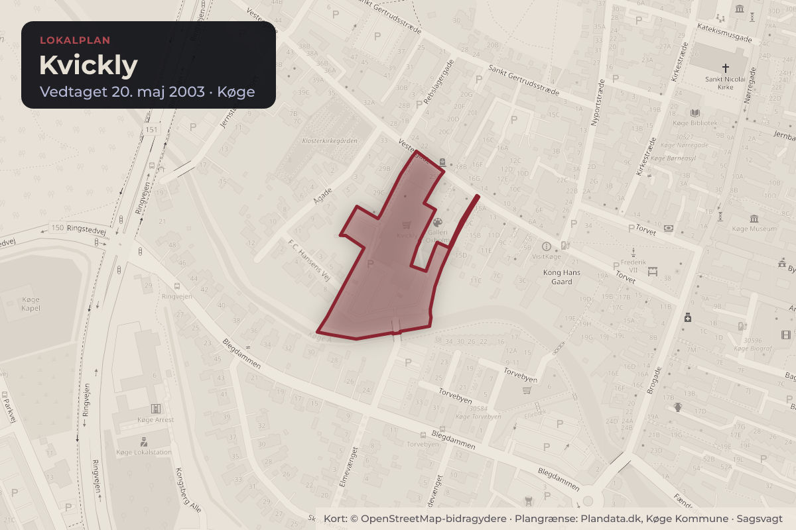
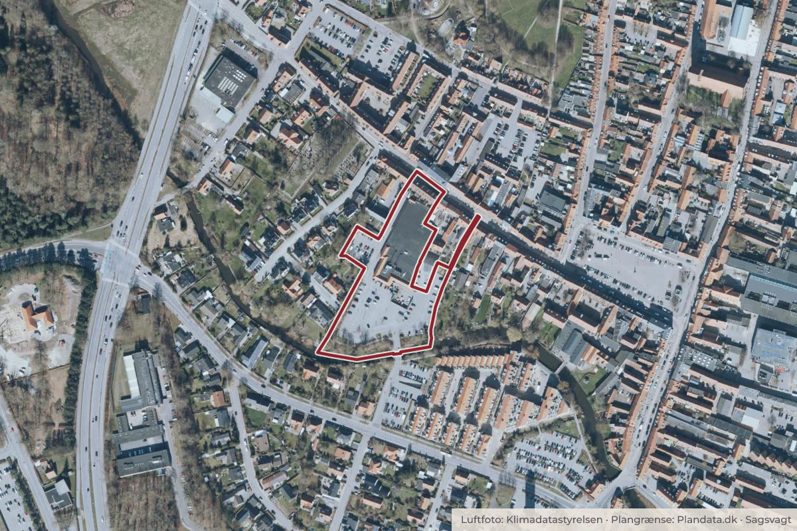

Besluttet 13. august, Plan-, Grøn- og Landdistriktsudvalget, Køge
Lokalplan 1129 - for boliger på Kvickly - orientering ang. bebyggelsens fremtræden
Teknik- og Miljøforvaltningen indstiller til Plan-, Grøn- og Landdistriktsudvalget, at oplægget fra Køge Arkitekter vedrørende fremtidig bebyggelse oven på Kvickly tages til efterretning.

Kort: © OpenStreetMap-bidragydere. Plangrænse: Plandata.dk, Køge Kommune.

Kort fortalt
- Hvem
- Plan-, Grøn- og Landdistriktsudvalget, Køge Kommune
- Hvornår
- Torsdag 13. august 2026
- Status
- Besluttet. Taget til efterretning. Udvalget beslutter, at der ikke arbejdes videre med sagen.Beslutningen er forkortet her. Læs hele beslutningen
Læs hele sagen Kommunens egen tekst
Indstilling
Teknik- og Miljøforvaltningen indstiller til Plan-, Grøn- og Landdistriktsudvalget, at
oplægget fra Køge Arkitekter vedrørende fremtidig bebyggelse oven på Kvickly tages til
efterretning.
Baggrund og vurdering
Den 11. november 2025 blev der afholdt forborgermøde i forbindelse med udarbejdelsen af
Lokalplan 1129 – Boliger på Kvickly.
På baggrund af mødet har der været et politisk ønske om, at arkitekterne efterfølgende
forholder sig til de bemærkninger og spørgsmål, som borgerne fremførte samt, at det politiske
udvalg orienteres herom.
Spørgsmålene og bemærkningerne er listet nedenfor:
Afstandskrav til eksisterende boliger, herunder boliger mod Vestergade samt
udarbejdelse af skyggediagrammer
Forbindelser til åen
Gener i forbindelse med ophold på trappen mod syd
Svækkelse af eksisterende udsigt og sigtelinier fra eksisterende bebyggelser
Arkitektur og materialer set i sammenhæng med resten af Køge By
Yderligere spørgsmål til P-pladser, fundering og pilotering
Arkitekterne har forholdt sig til borgernes bemærkninger og spørgsmål i de opdaterede
tegninger, skyggediagrammer og beskrivelser, som er vedlagt sagen som bilag.
I det nye oplæg er bl.a. afstanden til eksisterende bebyggelse mod Vestergade øget væsentligt
fra ca. 5 meter til 15 meter. Endvidere er der redegjort for sigtelinier til og fra ny bebyggelse,
som indikerer, at ny bebyggelse ikke ændrer på byens "skyline". Trappen, der var tegnet som
et offentligt opholdsrum, er gentænkt som en mindre forbindelsesgang sammen med stisystem
mod åen. Dialog om den arkitektoniske udformning pågår fortsat, men bygger videre på
ideerne fra prospektet.
I notatet skriver arkitekterne, at det grundlæggende er intentionen ikke at tilføje flere hårde
tagflader, men derimod at tilbagebringe et grønt islæt til området – en kvalitet, som i vid
udstrækning gik tabt ved netop opførelsen af Kvickly i 1974. Af notatet fremgår det i øvrigt, at
arkitekterne ønsker at udvikle området gennem nye arkitektoniske fortolkninger, frem for kopier
af eksisterende bygninger.
Forvaltningen anbefaler, at samarbejdet med bygherre og rådgiver om udarbejdelsen af
Lokalplan 1129 fortsættes med udgangspunkt i det reviderede oplæg.
Beslutning
Taget til efterretning.
Udvalget beslutter, at der ikke arbejdes videre med sagen.
Fraværende: Thomas Kampmann (C) deltog ikke i behandlingen af punktet.
Kilde: Køge Kommune, Plan-, Grøn- og Landdistriktsudvalget, referat fra mødet torsdag 13. august 2026, punkt 7. Læs den originale sag hos kommunen.